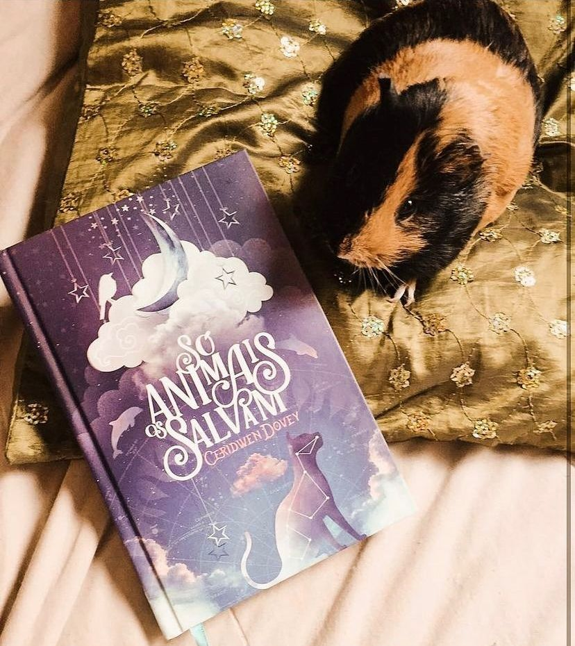

Só os Animais Salvam
(Ceridwen Dovey - Darkside)
⭐⭐⭐⭐⭐
Nós, humanos, achamos que somos o máximo. Mas o que temos feito com o nosso mundo? SÓ OS ANIMAIS SALVAM é um livro que tenta responder a essa pergunta de maneira inusitada. Cada um de seus contos é uma fábula moderna ― narrada pela alma de um animal envolvido em mais um dos incontáveis conflitos e guerras humanas ao longo do último século ― e suas espantosas e formidáveis histórias de vida e morte.
Não se engane com o título, achando que você vai se deparar com histórias fofas sobre animais. Neste livro você vai encontrar dez contos com críticas severas a humanidade e a visão que os animais tem de nós. Tudo isso ocorre em meio a guerras que assolaram nossa civilização logo, a visão deles sobre nós são bem duras.
Muitos dos animais escolhidos como narradores já tiveram sua inteligência comprovada pela ciência como: golfinhos, elefantes, chimpanzés,camelo. O livro as vezes é difícil de digerir e chega a ser triste, tornando a leitura um pouco lenta por causa dos questionamentos internos que fazemos a todo momento. Com isso, acredito que a autora atingiu seu objetivo de forma certeira e a escolha de fábulas de encaixa perfeitamente aqui. Super indico o livro pra qualquer pessoa e nem preciso dizer que a edição da DarksideBooks está lindíssima né?
“Eles – os humanos, quero dizer – parecem acreditar que o que os separa dos outros animais é a sua habilidade de amar, sofrer, sentir culpa, pensar abstratamente et cetera. Estão enganados. O que os separa é seu talento para o masoquismo. É aí que reside o seu poder. Ter prazer na dor, tirar forças da privação, isso é ser humano.”